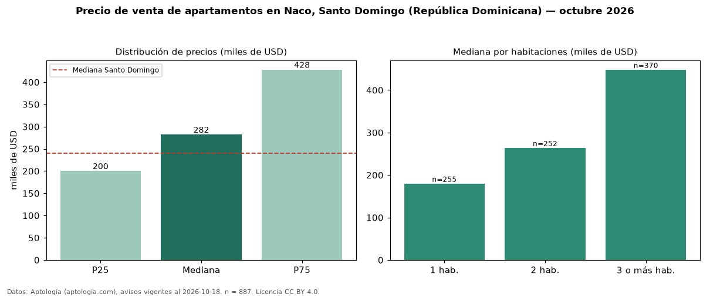

Precio de venta de apartamentos en Naco, Santo Domingo (República Dominicana) — octubre 2026
Con 887 avisos vigentes, el precio mediano de apartamentos en venta en Naco, Santo Domingo (República Dominicana) es USD 281.900. Frente a la mediana de Santo Domingo para apartamentos (USD 240.000), queda 17 % por encima. Por metro cuadrado, la mediana es USD 2.459/m² (n = 817 avisos con área), 24 % por encima de Santo Domingo (USD 1.975/m²). Con el precio por m² de alquiler del mismo segmento (USD 13,46/m² al mes), la rentabilidad bruta implícita es 6,6 % anual (aproximación con medianas de ofertas distintas). El área mediana anunciada es 131 m². El segmento con más oferta es el de 3 o más habitaciones (370 avisos, mediana USD 448.000); pasar de 1 habitación a 3 o más habitaciones cambia la mediana +149 %. La mitad central de los avisos va de USD 200.000 a USD 428.000 (razón 2,1), una dispersión alta. Por precio mediano es el puesto 6 de 29 sectores de Santo Domingo con al menos 30 avisos de apartamentos en venta (USD): en la franja media. Datos: Aptología (aptologia.com), CC BY 4.0 — https://www.aptologia.com/do/venta/santo-domingo/naco. Archivos: PDF, CSV con las cifras y gráfica PNG.

| Avisos únicos | 887 |
|---|---|
| Percentil 25 | COP 200.000 |
| Mediana | COP 281.900 |
| Percentil 75 | COP 428.000 |
| Mediana por m² | COP 2.459 |
Fuente: avisos vigentes de portales inmobiliarios recopilados por Aptología, deduplicados (mínimo 30 avisos únicos por celda). Precios pedidos, no cerrados. Fecha: 2026-10-18.